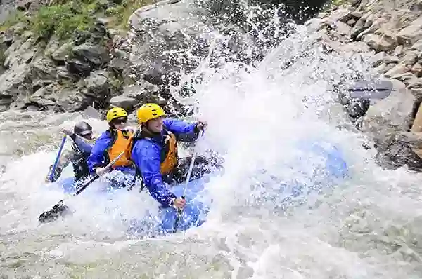
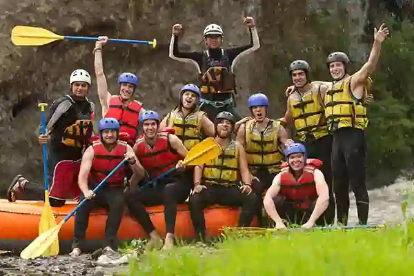

Bigin your adventure with Z-splash White Water Rafting. We offer a variety of trips for all levels of experience. Whether you are a first-time rafter or an experienced thrill-seeker, we have the perfect trip for you. Our expert guides will help you navigate the rapids and ensure you have a safe and memorable experience. Book your trip today and get ready to make a splash!


Most Popular California Rafting Trips, Highly Recommended with Great Reviews

Tom Sawyer Float Trip (South Fork Easy Section) Special itinerary for families with children too young . Typical Season: June - October* Trip Options: 1-Day Meet Place: Lotus, CA Specialty Trip for Children 5-7 Years Old

California's most popular whitewater rafting river. Typical Season: April - October; Express trips: all year* Trip Options: Express, 1-Day, 2-Day Meet Place: Lotus, CA Usual Minimum Age: 8 popular whitewater rafting river
Merced River Fast roller coaster ride for the adventurous rafter. Typical Season: April - June* Trip Options: 1-Day Meet Place: Midpines, CA Usual Minimum Age: 12 Merced River adventurous rafter.

Cherry Creek (Upper Tuolumne) The most challenging whitewater trip in the U.S. Typical Season: July - September* Trip Options: 1-Day Meet Place: Groveland, CA Usual Minimum Age: 17 Cherry Creek (Upper Tuolumne)
Tuolumne River 180 reviews A wilderness adventure with thrilling rapids. Typical Season: April - September* Trip Options: 1-Day, 2-Day, 3-Day Meet Place: Groveland, CA Usual Minimum Age: Summer 13; Spring 15
North Fork Stanislaus River 13 reviews Amazing scenery & challenge for experienced rafters. Typical Season: April - May* Trip Options: 1-Day Meet Place: Arnold, CA Usual Minimum Age: 15
Goodwin Canyon / Stanislaus River 23 reviews Scenic volcanic canyon, fun rapids, two Class IV's. Typical Season: April - May & 2 weeks in September or October* Trip Options: 1-Day Meet Place: Knights Ferry, CA Usual Minimum Age: 15
Kaweah River 16 reviews Non-stop action for experienced rafters. Typical Season: April - June* Trip Options: 1-Day Meet Place: Three Rivers, CA Usual Minimum Age: 15 experienced rafters only.
| Trip Name | Trip ID | Trip Class | Description | Price | |
|---|---|---|---|---|---|
| INTERMEDIATE | ADVANCED | ||||
| Tom Sawyer Float Trip | 427311 | All Year | Special itinerary for families with children too young | 0.00 | |
| Merced River | 533175 | Fast roller coaster ride for the adventurous rafter | 0.00 | ||
| Goodwin Canyon | 601942 | All Year | Scenic volcanic canyon, fun rapids | 0.00 | |
| All Prices Include Tax | 0.00 | ||||